| ・ （社）日本機械学会関西支部 第91期定時総会講演会＠大阪電気通信大学寝屋川キャンパス (H28.03.11-12) | |||
去年からM1はポスター発表です．去年は1人発表でしたが今年は2人です。去年は並行して行っている講演会場間の廊下で午前と午後に偶数奇数で別れてでしたが，今年も講演は並行でポスター会場は2部屋で交代しながら1時間でした．まだ2年目なので来年はまた変わっていくと思います．もともとは12月のMECHAVOCATIONでやっていたのが，去年から定時総会でやるようになりました．ポスターは就活の技術面接で使えるので発表者にとっては2度美味しいとこの時のムーくんからのオススメでもあります．結局，M1のまとめがポスターになりますし，去年の省吾も面接で助かったとのこと．あとで研究室廊下にポスターは掲示します． |
|||
|
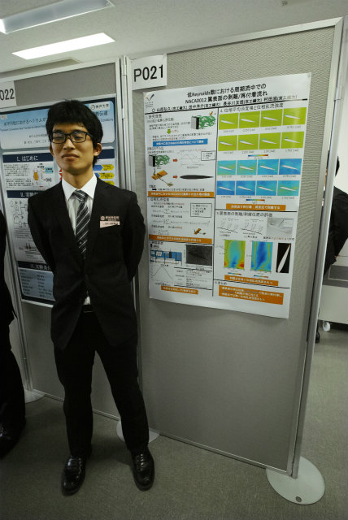
奇数のY西くんから |
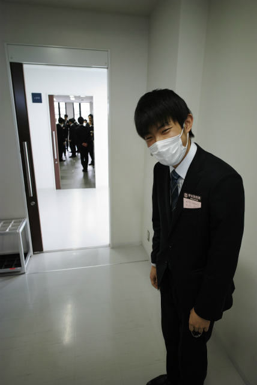
偶数のTNくん | ||
|
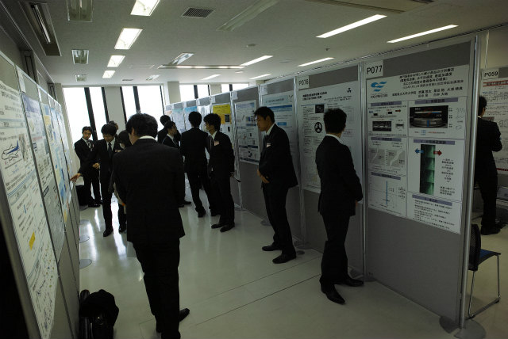
ギュッとしてます |
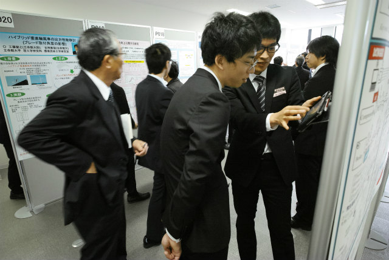
PDAで動画を見せる | ||
|
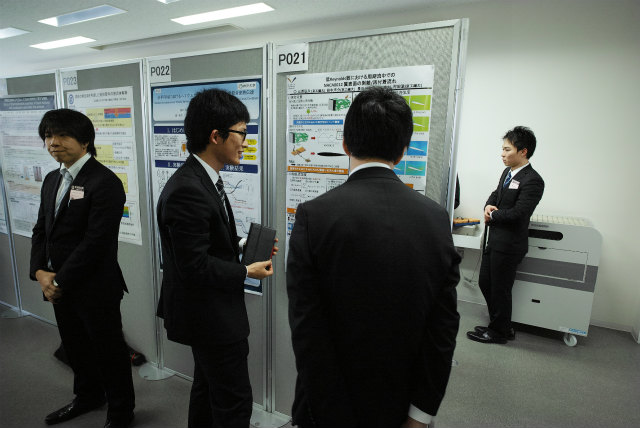
4人くらいに説明 |
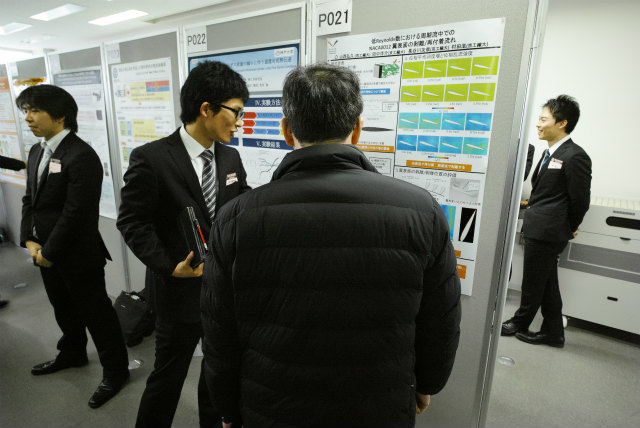
時間配分はそれぞれで違います | ||
|
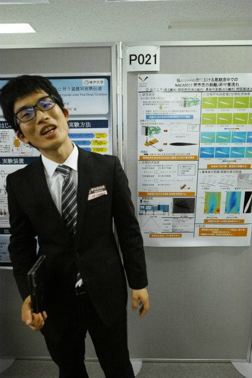
初めてのポスターでお疲れ |
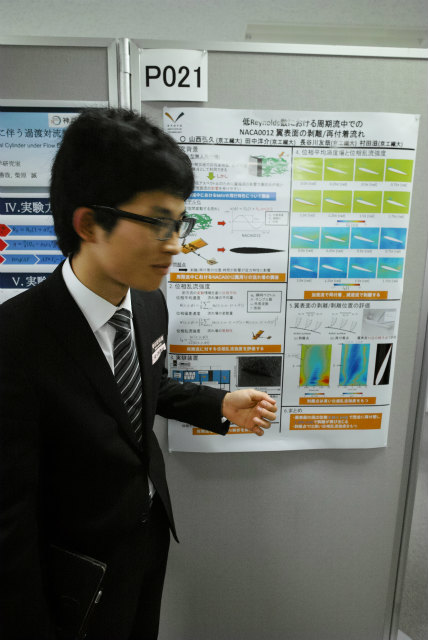
それっぽいポーズ | ||
|
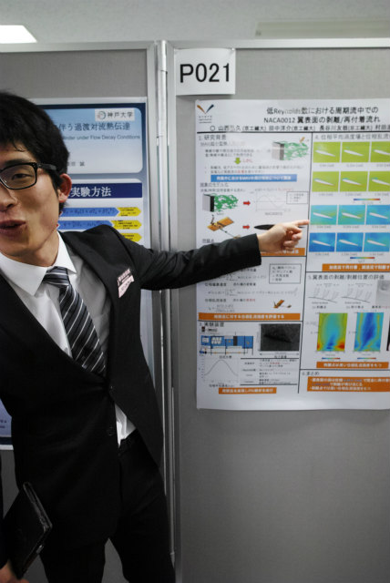
ダイナミックすぎ |
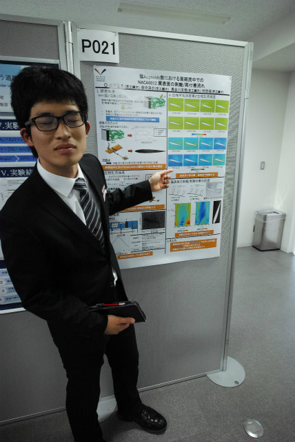
賢そうな顔で | ||
|
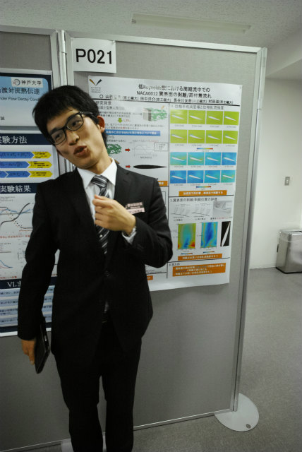
Perfect human |
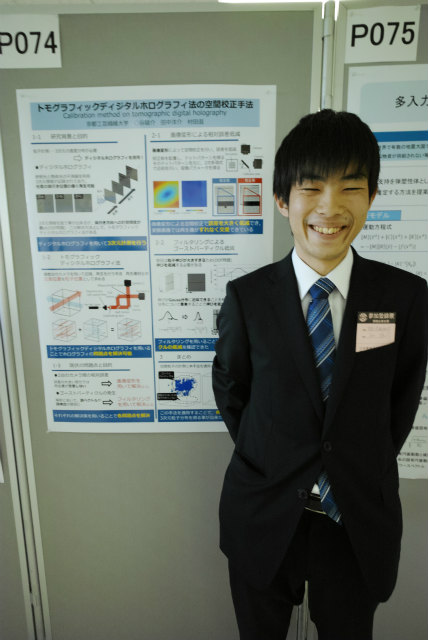
TNくんも初ポスター | ||
|
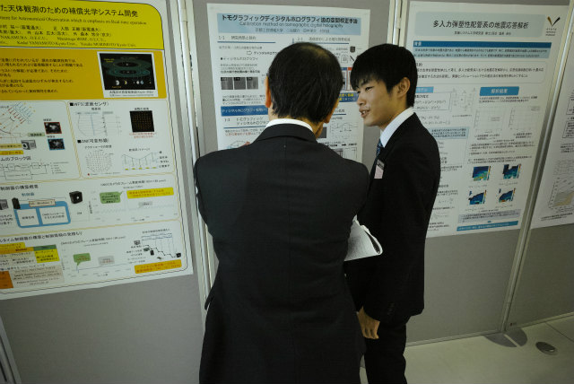
企業の方とのやりとりは技術面接に活かせそうとのこと |
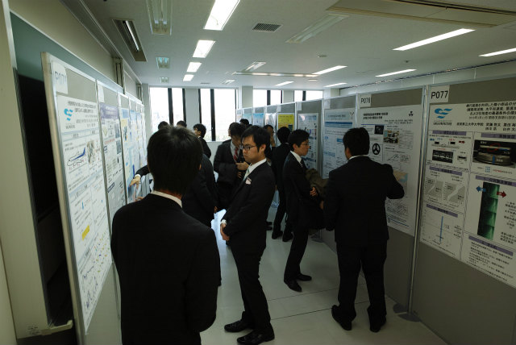
そろそろ時間 | ||
|
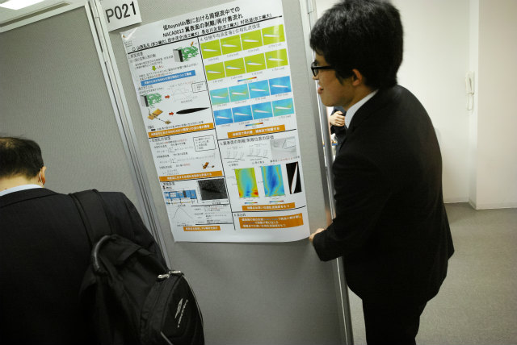
ポスター回収 |
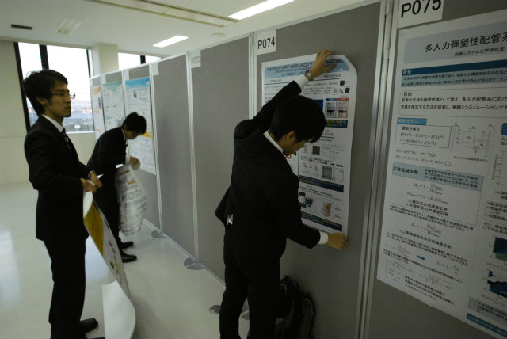
撤収は早いのが計測研 | ||
|
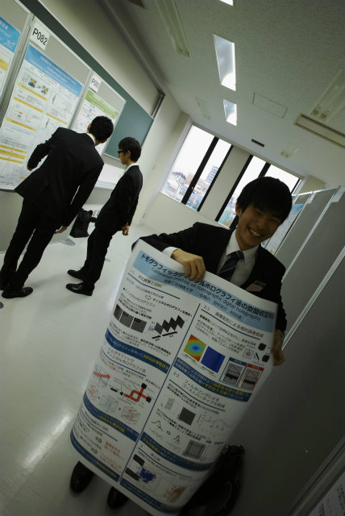
3人程度とじっくり話せて満足げ |
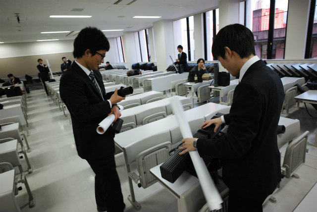
バズーカに入れよう | ||
|
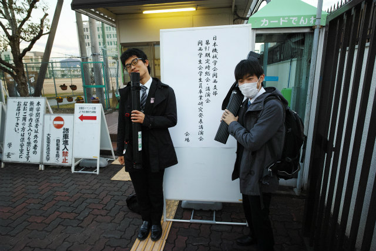
Perfect humanとやきう |
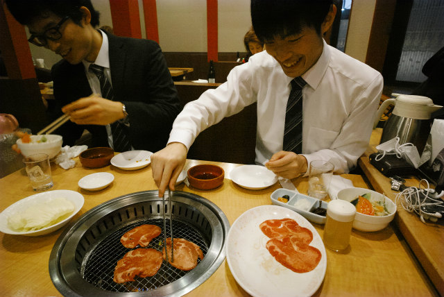
また焼き肉 | ||
|
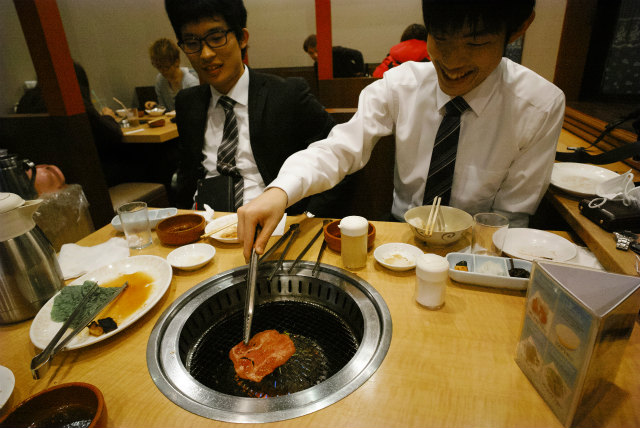
TNくんにとって塩タンはデザート |
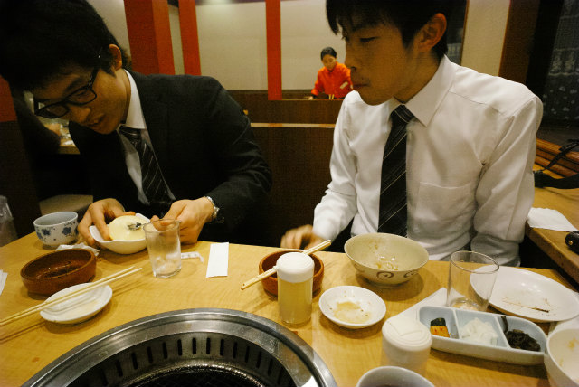
おれはシャーベットでいいわ | ||